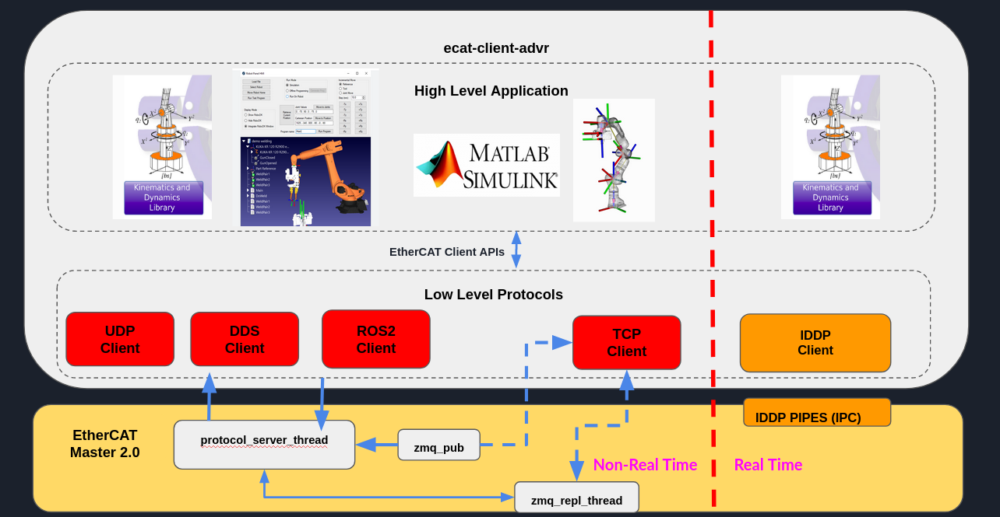
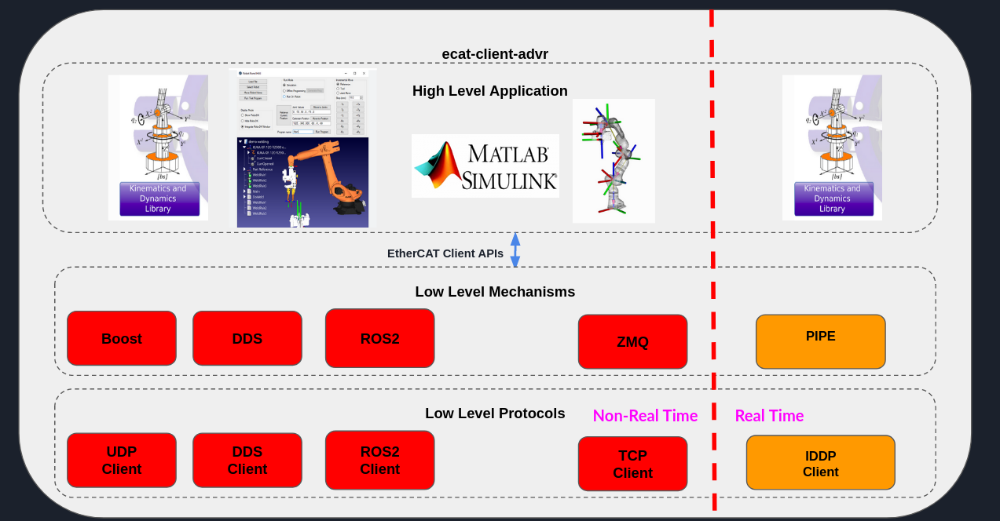
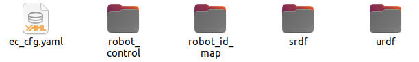
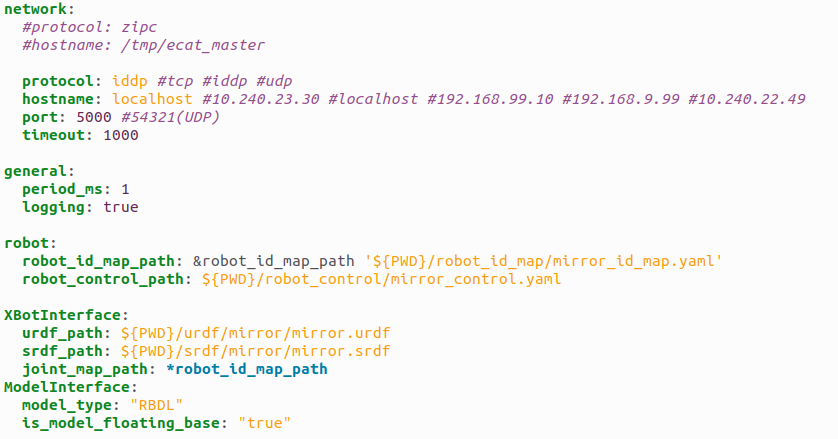
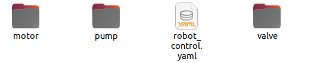
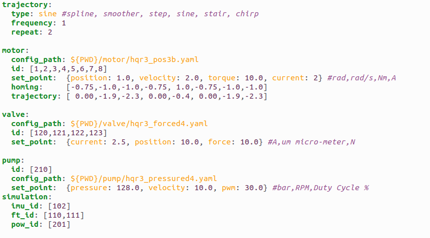
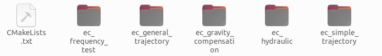

EtherCAT Client
Software architecture
 Code documentation
It’s possible to generate the doxygen documentation to read the code of the EtherCAT client:
doxygen Doxyfile
Configuration files
The suggestion is to create a directory with this sub-directories:
ec_cfg.yaml: This is the main file for setup the EtherCAT Client.
robot_control: Here it’s possible to setup the robot control having different slaves that can be controlled (motors,valve,pumps,etc…).
robot_id_map: File of the slave map (id—>name).
urdf: The URDF of the robot that can be used for simulation or by internal libraries for mathematical calculations.
srdf: The URDF of the robot that can be used for simulation or by internal libraries for mathematical calculations.
Client file
network: Setup the EtherCAT Client network using the TCP/UDP, IDDP (Real-Time Xenomai IPC Pipes) or ZIPC (ZMQ Inter-process) .
general: Setup period and low level logging. (Optional)
robot: Setup the robot_control and robot id map paths. (Optional)
XBotInterface: Setup the urdf/srdf for the XBotInterface library. (Optional)
ModelInterace: Setup the model characteristics for the ModelInterface library. (Optional)
Robot control
 trajectory: Setup the trajectory type, frequency and repeat number. (Used by Motors and Valves).
motor: Setup the low level configuration file, ids, set points, homing and general trajectories. (Optional)
valve: Setup the low level configuration file, ids, set points, homing and general trajectories. (Optional)
pumps: Setup the low level configuration file, ids, set points, homing and general trajectories. (Optional)
simulation: Setup other slaves for the simulation. (Optional)
Examples
frequency test: This example can be used to star the controllers of the slave and increase the period set up in ec_cfg.yaml file (executable argument in micro-second) . This example was created for testing the UDP protocol.
general trajectory: This example can be used to start a general trajectory specified in robot control trajectory session.
gravity compensation: This example can be used to send the gravity compensation for the motors.
hydraulic: This example can be used to start a simple quintic degree polynomial trajectory specified in robot control trajectory session for motor,valves and pumps.
simple trajectory: This example can be used to start a simple quintic degree polynomial trajectory specified in robot control trajectory session only for the motors.
Note: Using the robot control session, it is possible to run the examples starting the controller of the specific slave with its control mode and set point using the its ID.
Important: A generic user can write its example code simpling adding the CMakeLists.txt the ec_library, find_package(ec_library) adding in the target_link_libraries ec_library::ec_library